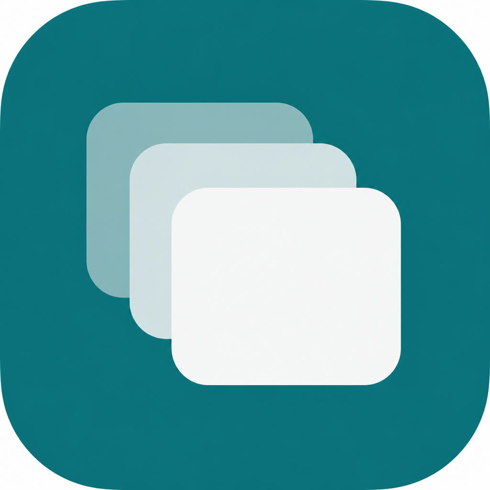

Comunicator
A native macOS shell for web messaging apps — WhatsApp, Google Messages, Slack, Messenger, Telegram, and custom URLs — each in an isolated tab.

What you get
One desktop window for the messaging services you already use on the web.
- Multi-tab WebKit shell with per-account session isolation
- Desktop notifications and dock badge for unread counts
- Rename, mute, clear, or delete sessions per tab
- Keyboard tab switching with ⌘1–⌘9
- Downloads, camera, and mic for in-page calls
Install on macOS
Requires macOS 14+. Builds are not notarized (no paid Apple Developer Program), so Gatekeeper needs a one-time open.
- Download Comunicator.zip and unzip it.
- Right-click Comunicator.app → Open → Open.
- If blocked: System Settings → Privacy & Security → Open Anyway, or run
xattr -cr /path/to/Comunicator.app.
Prefer versioned builds? Get the latest GitHub Release zip.